Robot Operating System (ROS)
Adapted from Adam Buynak.9, The Ohio State University
The Robot Operating System (ROS) is a flexible framework for writing robot software. It is a collection of tools, libraries, and conventions that aim to simplify the task of creating complex and robust robot behavior across a wide variety of robotic platforms. When it comes to maritime robotics, ROS provides a unique and powerful platform to develop and integrate various subsystems such as navigation, perception, control, and decision-making into a cohesive system.
One of the key strengths of ROS is its community and the plethora of available resources and tools. The ROS ecosystem comprises a vast array of software libraries and tools that are specifically designed for robotics applications. This ecosystem enables rapid development and testing of software components, which is particularly beneficial in the field of maritime robotics where testing in real-world conditions can be costly and time-consuming.
Foundational aspects:
- Architecture: Understanding the ROS architecture, including the concepts of nodes, messages, topics, services, and the parameter server, is important. These components facilitate the modular and distributed nature of ROS, allowing for seamless integration and data exchange between different parts of a robotic system.
- Simulation and Visualization Tools: Tools like Gazebo and RViz play a significant role in ROS-based development. Gazebo provides a powerful simulation environment that can mimic the complex dynamics of maritime environments, while RViz offers visualization capabilities that are essential for debugging and developing perception algorithms.
- ROS Navigation Stack: The navigation stack is particularly relevant for maritime robotics, as it encompasses algorithms and tools for path planning, localization, and obstacle avoidance. Adapting these tools to the specific requirements of maritime environments, such as dealing with water currents and three-dimensional movement, is an important area of focus.
- Integration with Sensors and Actuators: A significant portion of ROS development in maritime robotics involves interfacing with various sensors (e.g., sonars, IMUs, GPS) and actuators (e.g., thrusters, robotic arms). ROS provides standardized interfaces for sensor data acquisition and actuator control, facilitating the development of sensor fusion algorithms and control systems.
- Community and Resources: Leveraging the ROS community and its resources, including software packages, tutorials, and forums, can accelerate the development process. Sharing experiences and solutions to common challenges in maritime robotics can foster innovation and collaboration within the field.
Introduction to ROS
A Standard Framework for Robotics Software
The Robot Operating System is a flexible framework for developing robotic systems. This framework comes with a wide variety of tools, libraries, and conventions to simplify the process of creating complex, robust robotic behavior. – ros.org
Previous Practices: - Slow growth restricted by need to regularly recreate technologies into a custom solution for each robot - Every hardware solution was custom designed - Every software solution was rewritten from scratch to match - Very little code ‘carried forward’ into future projects
| 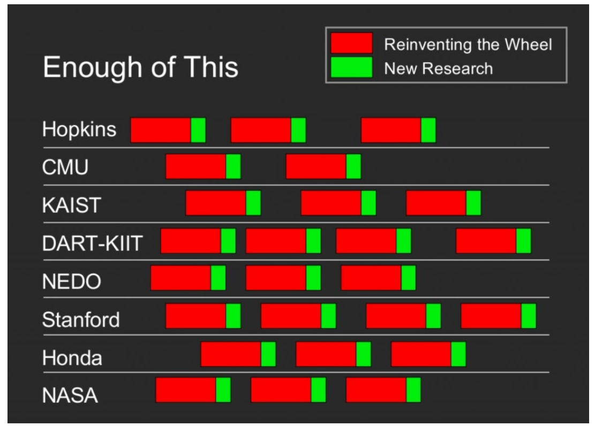 |
Slide from 2006 Proposal Pitch Deck at Stanford to begin developing a standard robotics framework. Credit: Keenan Wyrobeck & Eric Berger.
| 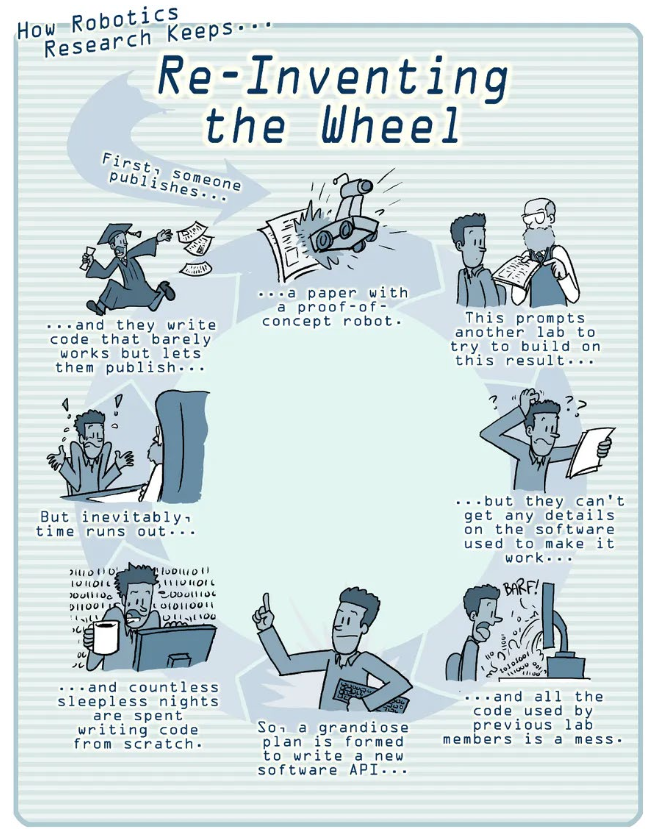 |
Building any mechatronic / robotic system is hard. Plain and simple.
Tesla builds self-driving cars with two mechanical outputs: 1 – the powertrain motor driving the wheels 2 – the direction of the front wheels (turning left/right)
They invest billions of dollars each year optimizing… - computer vision - environment input sensors - control systems - user interface - self-driving algorithms - motor control
Tesla: USD 2,984 on R&D per car
Industry Average: USD 1000 on R&D per car
Tesla’s self-driving car is a robot
Automotive engineers have the convenience of a standard, 4-wheeled vehicle to implement code.
Robots come in many different forms, motor types, control schemas, etc.
Each subsystem requires development time.
This could be… - various mechanical joints (revolute, prismatic, etc) - integrating multiple OEMs - smaller/larger, weaker/stronger, slower/faster
ROS fundamentally enables collaboration of novices and experts to rapidly develop complex systems.
| 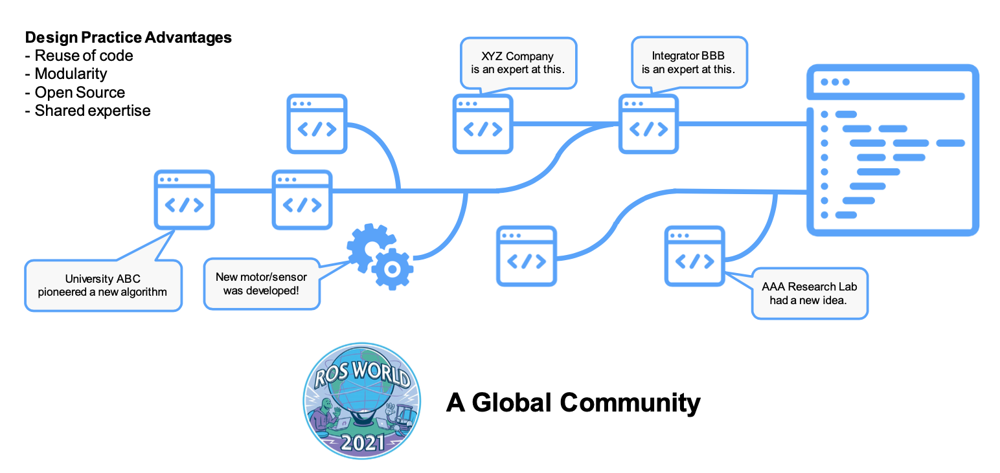 |
A Typical Mobile Robot Software Stack
| 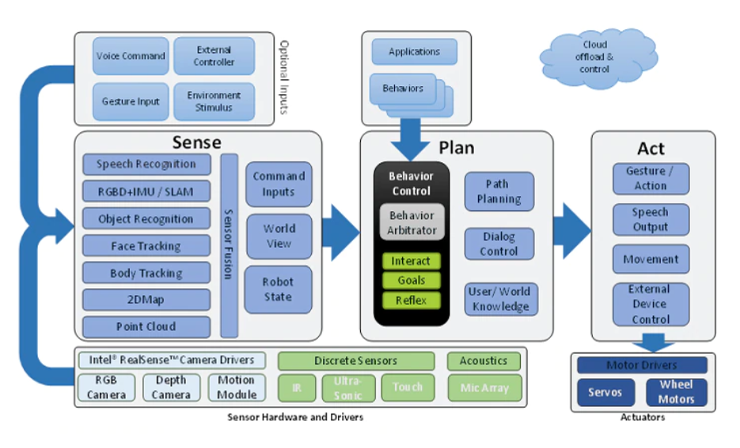 |
- Don’t rebuild the wheel.
- Leverage the existing capabilities in ROS.
- Focus your time on new features.
- Contribute new developments to the ROS community.
Nodes, Topics and Messages
Nodes
| 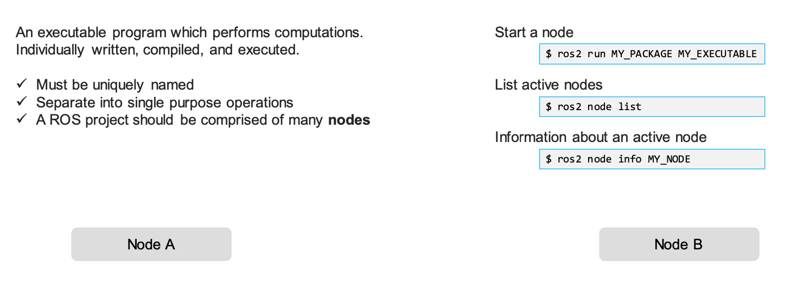 |
Topics
| 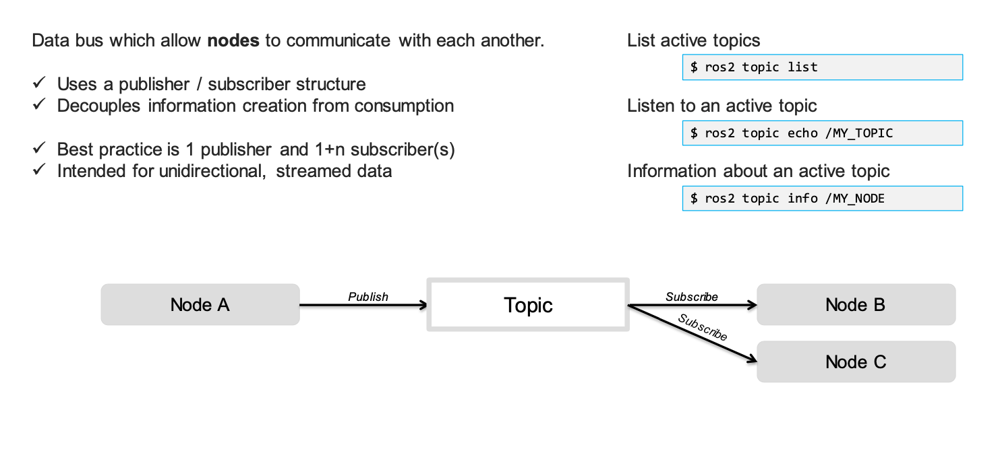 |
Messages
| 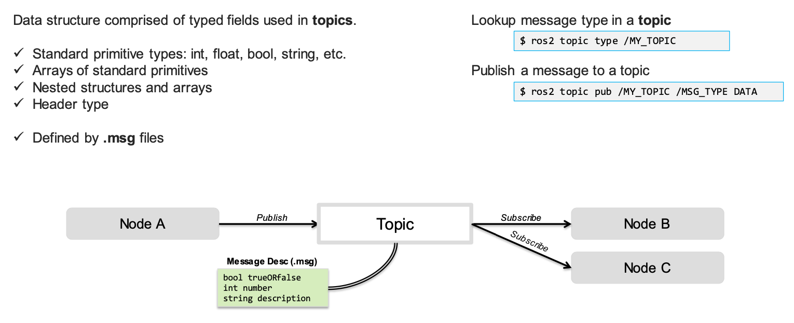 |
Services
| 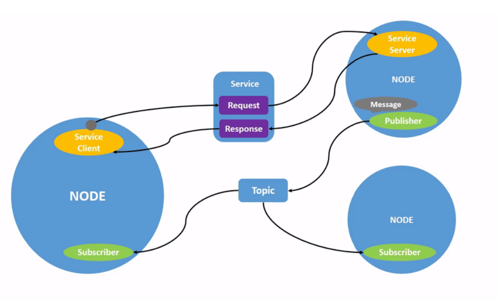 |
Message Formats
| 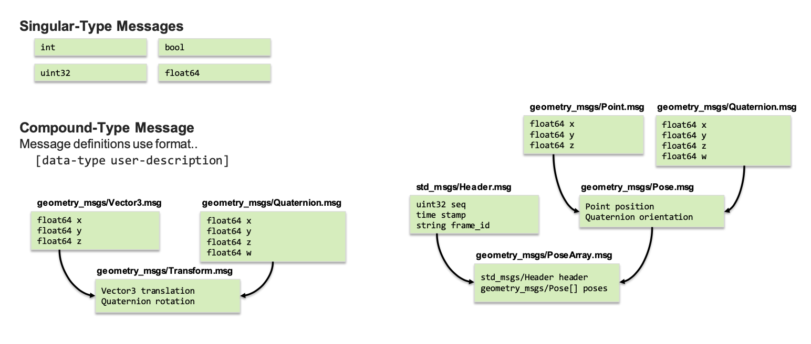 |
List shown is non-comprehensive!
Standard Messages
| 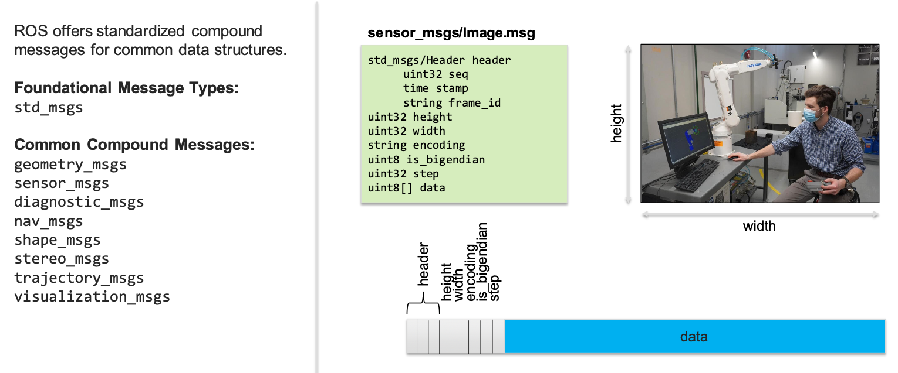 |
List shown is non-comprehensive!
Communication Interfaces
ROS nodes may communication using three methods: - Topics, Services, Actions
| 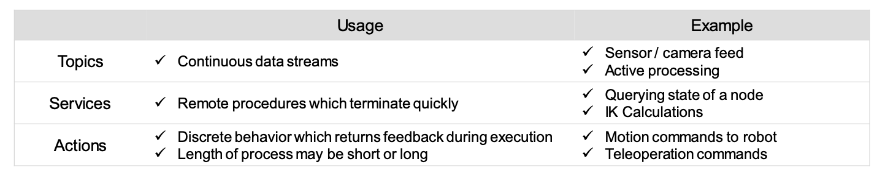 |